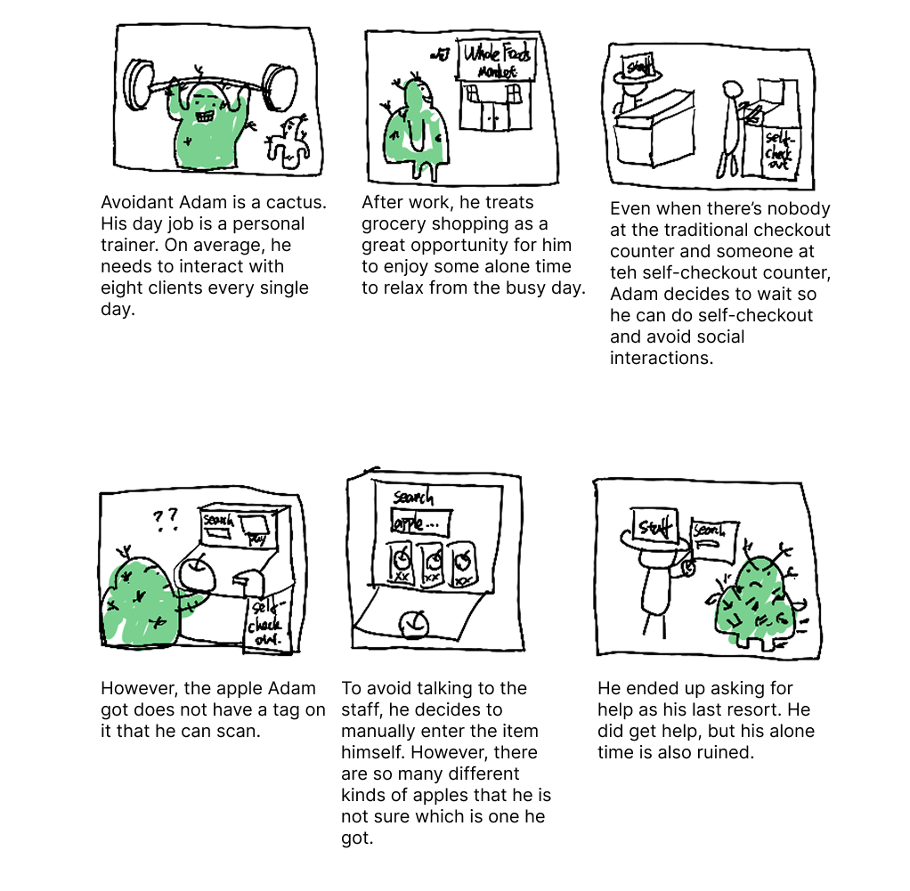

Overview
This assignment focuses on creating personas and storyboards for a public interface. The approach involves observing and interviewing users in natural settings to understand their goals, needs, and frustrations.
Part 1: Preparation
The public interface I chose is the self-checkout kiosk at Whole Foods Market. Here's a rough sketch of the kiosk interface, highlighting the main interaction points:

Summary of Main Interaction Points
- To input an item, the user either scans the tag or manually enters the item name.
- For fresh produce, users must first select the item on-screen, then place it on the scale.
- An on-screen list displays all scanned items with running totals.
Interview Questions
- What makes you decide to use the self-checkout kiosk over a regular cashier line?
- Which parts of the self-checkout do you find most difficult?
- Any follow-up questions based on observed behaviors (e.g. scanner issues, bagging area confusion, etc.).
Part 2: Recording Observations
I observed and later interviewed 3 users scanning groceries and navigating the payment process.
Observation Summaries (3 Users)
- P1 has difficulties using the scanning gun to enter the item in the kiosk, so he asked attendants for help.
- P2 is very quick in getting everything he has scanned and paid for.
- P3 starts the self-checkout process around the same time as me (I also tried it out to experience it first-hand), but it takes him much longer to complete.
Interview Summaries (3 Users)
-
Question: What makes you decide to use the self-checkout kiosk over a regular cashier line?
- P1: Because there is no line around that time.
- P2: Because he has only a few items to checkout.
- P3: Because he wors with the people a lot for work, he chooses to self-checkout to minimize social interaction with people.
-
Question: Which parts of the self-checkout do you find most difficult?
- P1: Not really any one of them, the whole process is quite smooth (I notice that he does have difficulty using the scanner, but he thinks this is an exception and does not speak about the general difficulty.)
- P2: Whenever there is an item that requires manually entering the name to lookup, it can be confusing if there are multiple variants of this item. For example, there are many different kinds of apples, and he doesn't really know which exact one he needs to select. Also, the scale can be inaccurate
- P3: The scanning part is a bit inconsistent, especially for fresh produces. Many times there is no tag on the item to be scanned for.
-
Question: Any follow-up questions based on observed behaviors (e.g. scanner issues, bagging area confusion, etc.)?
- Question specific to P1: I see that you had some difficulties using the scanning gun to enter the item in the kiosk. Can you tell me more about that?
- Answer: He scanned the wrong tag, which interrupted the normal checkout process. He had to ask the attendant for help to remove the wrong item from the list.
- Question specific to P2: Do you have to ask attendants for help often?
- Answer: When the scale is working incorrectly or whenever he gets confused by the ambiguous name of the apples, he asks for help.
- Question specific to P3: Whenever you get confused by the scanner, do you ask for help?
- Answer: He still chooses to figure things out himself.
Part 3: Personas
Persona 1: "Optimizer Oliver"
Brief description: Optimizer Oliver is a college student. He decides to grab a quick lunch and some light groceries on his way home after a day of classes.

Persona 2: "Avoidant Adam"
Brief description: Avoidant Adam is a personal trainer. After a long day at work, he treats grocery shopping as a relaxing task that lets him avoid social interactions and regain inner peace.
Part 4: Storyboard
Below is a 6-frame storyboard that shows the entire user journey from arriving at the kiosk to completing the checkout for Avoidant Adam.
